Baignade & Loisirs · Vernet-la-Varenne
Seul plan d'eau de baignade surveillée du Pays d'Issoire. 3 hectares de nature préservée au cœur du PNR Livradois-Forez. Idéal pour toute la famille !
🏖 Baignade surveillée en juillet–août
🚣 Pédalo · Paddle · Stand-up paddle
🌲 Accrobranche · Pêche · Aire de jeux
🎾 Tennis · Pétanque · Volleyball
🍔 Bar & restauration · 🆓 Accès libre toute l'année
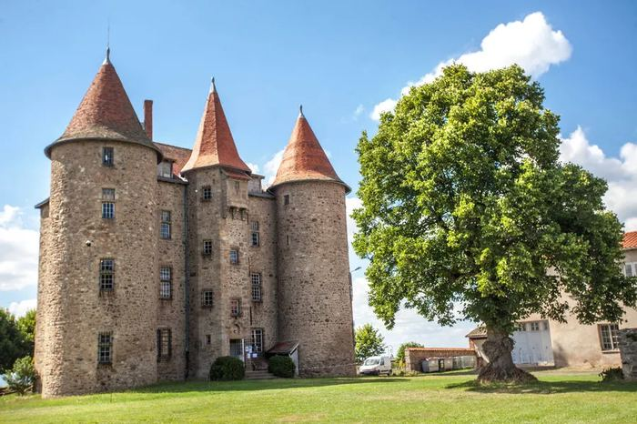
Musée de l'Améthyste & ses animations
Découvrez le principal gisement d'améthyste d'Europe ! Visite du musée, chasse aux cristaux sur le site, initiation au polissage et fabrication de bijoux à emporter en souvenir.
🔮 Visite du musée et du gisement
💎 Atelier taille et polissage des pierres
🛍 Boutique : bijoux, cristaux, minéraux
🎨 Animations en saison pour les enfants
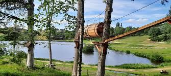
Accrobranche au bord du lac
Parcours dans les arbres pour petits et grands, directement au bord du plan d'eau. Accessible dès 3 ans !
📱 Traces GPS sur Visorando et Komoot · Cartes papier à la maison · Topos à l'Office de Tourisme d'Issoire
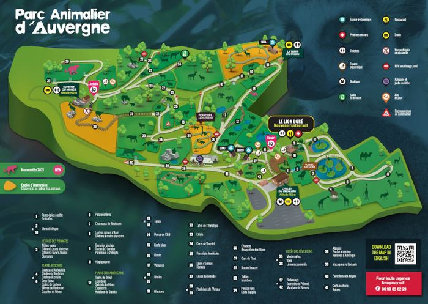
Parc Animalier d'Auvergne · Ardes-sur-Couze
350 animaux de 65 espèces menacées sur 50 ha. Girafes, lions, pandas roux, panthères des neiges, lémuriens… Entièrement dédié aux espèces en danger.
🗓 Ouvert février–décembre · Jours fériés inclus
🎟 Adulte : 24,50€–28,50€ · Enfant 3-9 ans : 17,50€–21,50€
👶 -3 ans gratuit · 💡 -3€/billet réservé 3j avant
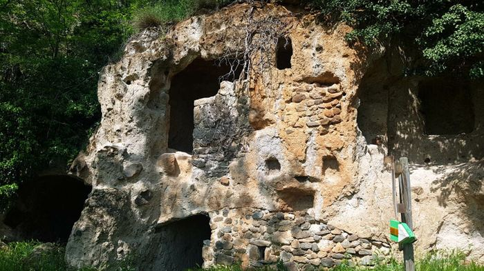
Grottes de Perrier
Ancien village troglodytique en accès libre, creusé dans la falaise de pouzzolane. Balade d'une heure dans un cadre insolite, parfaite pour les enfants curieux.
🆓 Accès libre · ~1h · Facile · Toute l'année
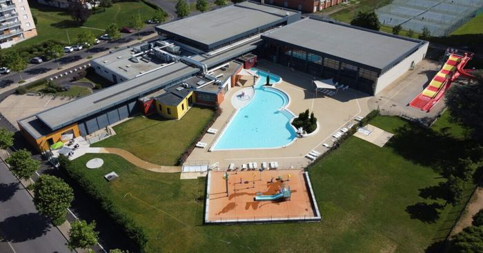
Centre Aqualudique
Toboggans, bassins intérieurs et extérieurs, pataugeoire. L'option idéale les jours de grande chaleur ou de pluie !
🌧 Idéal si mauvais temps · Ouvert toute l'année
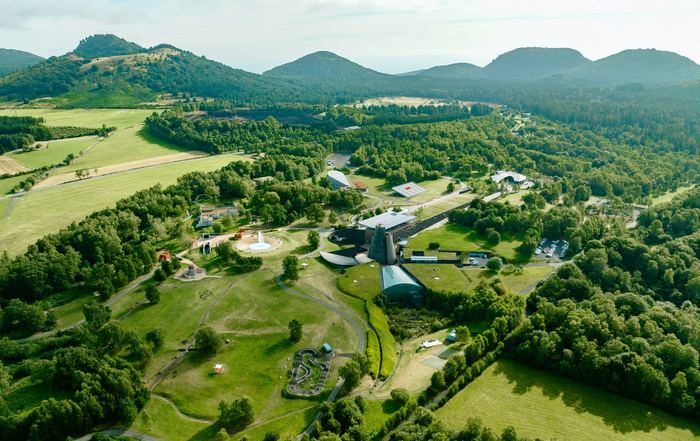
Vulcania
Le grand parc européen du volcanisme. Manèges, films 4D, attractions spectaculaires autour des volcans. Incontournable avec des enfants.
🌋 Réservation conseillée en été · vulcania.com
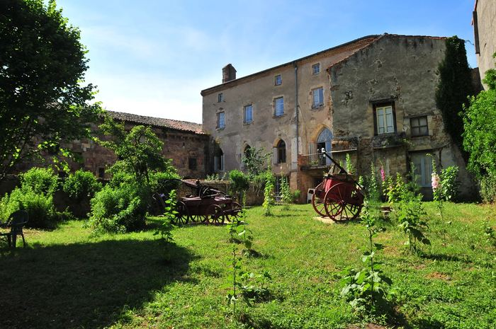
Sauxillanges – Site Clunisien
Bourg médiéval fondé au Xe s. autour d'un prieuré de l'Abbaye de Cluny. Ruelles pavées, bâtiments en arkose et animations estivales.
🛒 Marché mardi matin
🎶 Guinguette Folle Allier (jeudis soir en été)
🎭 Balades théâtralisées mardi soir en été
🏛 Maison du Patrimoine · App Clunypédia
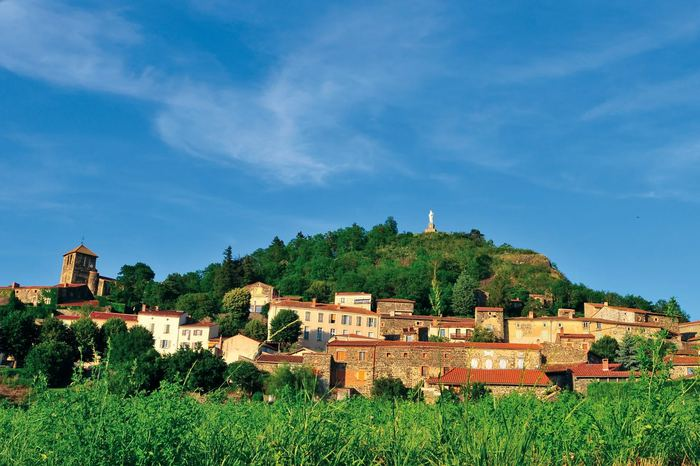
Usson – La Reine Margot & les Orgues
Perché sur son piton d'orgues basaltiques, Usson est l'un des Plus Beaux Villages de France. La Reine Margot y fut exilée de 1586 à 1605.
🪨 Orgues basaltiques · 🗺 Circuit 4 km · 2h · Gratuit
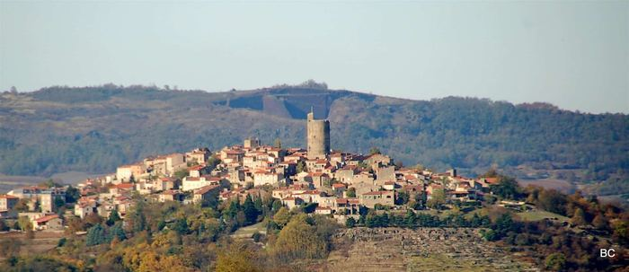
Montpeyroux
Village de tailleurs de pierre classé Plus Beau Village de France. Maisons en arkose dorée, donjon de 30 m, ruelles pavées et vignerons locaux.
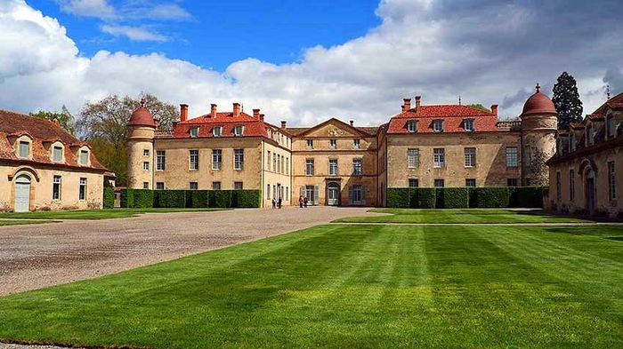
Château de Parentignat
Le "Versailles auvergnat" : château du XVIIIe et ses jardins à la française, ouverts à la visite en saison. Collection mobilière exceptionnelle.
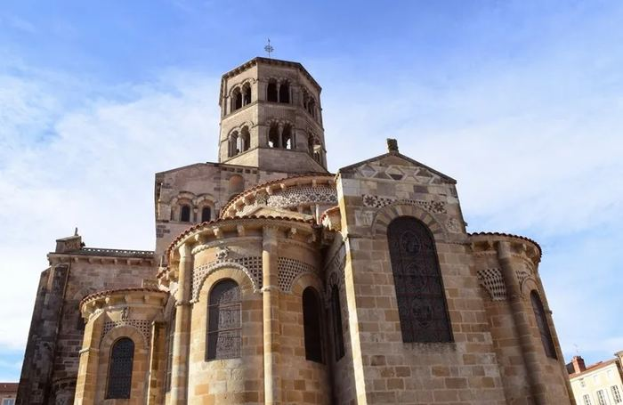
Issoire & son Abbatiale romane
L'une des plus belles abbatiales romanes d'Auvergne (XIe s.), classée monument historique. Commerces, cinéma. Animations vendredis soir en été.
🎪 Vendredis soir animés en été · Marché samedi matin
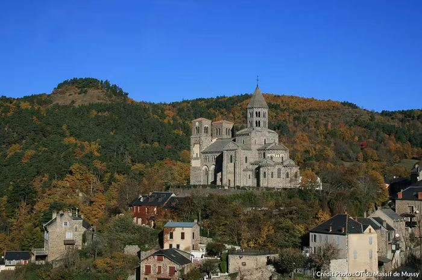
Saint-Nectaire & ses Fromages
Village thermal et fromager AOP. Visitez une cave d'affinage, goûtez en direct le vrai Saint-Nectaire fermier. Église romane du XIIe remarquable.
🧀 Dégustation sur place · À coupler avec le Lac Pavin
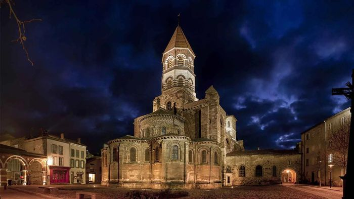
Brioude & la Basilique Saint-Julien
La plus grande église romane d'Auvergne (XIe–XIIe s.), classée monument historique. Ses chapiteaux polychromes sont parmi les plus beaux de l'art roman. La ville de Brioude, ancienne cité gallo-romaine au bord de l'Allier, vaut également la promenade.
🏛 Entrée libre · Visites guidées en saison
🐟 Brioude : capitale française de la pêche au saumon
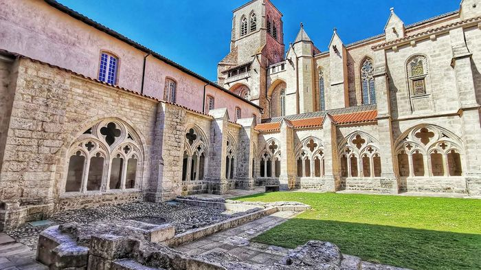
La Chaise-Dieu – Abbaye & Festival
L'une des plus grandes abbayes bénédictines de France (XIVe s.), perchée à 1 082 m d'altitude. Chef-d'œuvre de l'art gothique avec sa célèbre "Danse macabre" peinte, ses tapisseries flamandes du XVIe s. et son exceptionnel jubé.
🎵 Festival de musique classique et sacrée chaque été
🏔 Village de caractère · Forêts et air vivifiant
matin
Marché de Sauxillanges · 8 km
Marché de village au cœur du bourg clunisien. Producteurs locaux : fromages, légumes, volailles, miel, artisanat. À combiner avec une balade dans les ruelles médiévales.
matin
Grand Marché d'Issoire · 20 min
Le plus grand marché de la région : fromageries, charcuteries, vins des Côtes d'Auvergne, légumes bio, fleurs. Idéal pour faire le plein de produits locaux.
Saint-Nectaire – Fromageries
Visitez une cave d'affinage et repartez avec de vrais fromages fermiers AOP. Certains producteurs proposent la vente directe à la ferme.
🧀 Goûts incomparables · Vente directe producteur
Producteurs Locaux · Pays d'Issoire
Miel, confitures, vins des Côtes d'Auvergne… La région regorge de producteurs passionnés. N'hésitez pas à demander des adresses à votre hôte !
🍯 Circuits courts · Qualité garantie
Le P'tit Roseau
📍 Issoire · ~20 minCuisine du marché, produits locaux et saison. Cadre chaleureux, belle carte de vins auvergnats.
L'Agastache
📍 Issoire · ~20 minTable inventive et végétale mettant à l'honneur les herbes aromatiques et les producteurs locaux.
Hobistro
📍 Issoire · ~20 minBistrot convivial à l'ambiance décontractée. Plats généreux, bonne sélection de bières artisanales.
L'Acérola
📍 Issoire · ~20 minCuisine soignée et créative, belle terrasse en saison. Une valeur sûre au cœur d'Issoire.
Chez Marthe
📍 Condat-lès-Montboissier · ~15 minRestaurant de campagne familial à l'ancienne. Repas ouvrier en semaine : simple, généreux, savoureux. Une vraie expérience du terroir auvergnat.
La Bergerie de Sarpoil
📍 Sarpoil · ~15 minAdresse gastronomique réputée dans une bergerie rénovée. Cuisine raffinée, produits du terroir, cadre exceptionnel. Réservation indispensable.
La Table Saint-Martin
📍 Sauxillanges · 8 kmTable agréable au cœur du site clunisien. Cuisine régionale soignée, idéale après une balade dans les ruelles de Sauxillanges.
💡 Pensez à réserver, surtout en été — les bonnes tables affichent vite complet !
Retrouvez l'agenda complet sur issoire-tourisme.com →
Animations estivales · Issoire
Chaque vendredi soir en juillet-août : concerts, spectacles de rue, marchés nocturnes autour de l'abbatiale illuminée. 20 min de la maison.
La Guinguette Folle Allier · Sauxillanges
Concerts en plein air les jeudis soir à Sauxillanges (8 km). Brunch, snacks locaux et bonne humeur dans un cadre atypique. Idéal en famille !
Balades Théâtralisées · Sauxillanges
Enquête policière médiévale au cœur du site clunisien. Tout public · 1h30 · Sur réservation. Syndicat d'initiative : 04 73 96 85 10.
Festival de la Chaise-Dieu
L'un des plus grands festivals de musique classique et sacrée de France, dans le cadre exceptionnel de l'abbaye bénédictine du XIVe siècle. 45 min de la maison.
Trail de l'Améthyste · Vernet
Course et rando pour tous (12, 23, 37 km + trails enfants). Départ depuis le plan d'eau, à 5 min de la maison !
Randos accompagnées · Pays d'Issoire
Randonnées guidées thématiques tout l'été. Agenda complet ici.
Puy de Dôme
Le sommet emblématique (1 465 m), classé UNESCO. Montée à pied ou en Panoramique des Dômes. Vue à 360° sur la chaîne des volcans.
→ Panoramique des DômesPuy de Sancy
Point culminant du Massif Central (1 886 m). Téléphérique, randonnées, sources de la Dordogne. Ski en hiver, fraîcheur en été.
Vallée de la Chaudefour
Réserve naturelle nationale au cœur du Sancy. Paysage volcanique spectaculaire, flore protégée, marmottes, vautours fauves.
Lac Pavin · Besse-en-Chandesse
Le lac volcanique le plus profond de France, dans un cratère parfait. Baignade, kayak, randonnée autour du lac (2 km).
Commerces à proximité
Vernet-la-Varenne (5 min) : boulangerie, boucher, supérette, bar, pharmacie, médecin.
Sauxillanges (8 km) : commerces, supermarché, restaurants.
Issoire (20 min) : grande surface, cinéma, hôpital, toutes enseignes.
Office de Tourisme · Pays d'Issoire
Conseils, cartes de randonnées, topoguides, location de vélos et agenda des animations.
Accès & Transports
A75 sortie n°13 (Issoire Nord) · 18 km d'Issoire
Gare SNCF Issoire : 20 min
Aéroport Clermont-Ferrand : 42 km
L'A75 est gratuite dans toute l'Auvergne !
VTT & Vélos
Parcours VTT balisé sur Vernet-la-Varenne et environs. Cartes au syndicat d'initiative de Sauxillanges.
🚵 Location de VTT à Vernet-la-Varenne